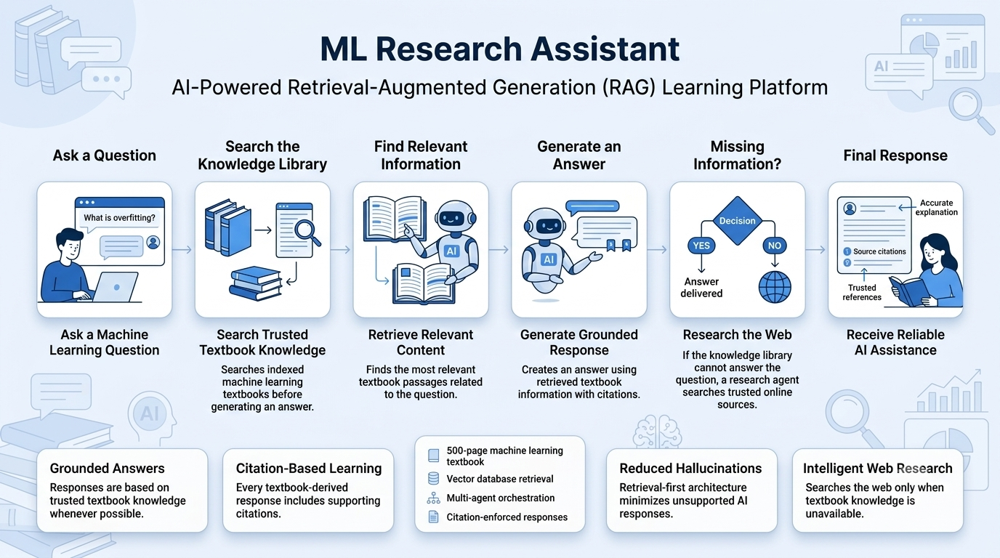
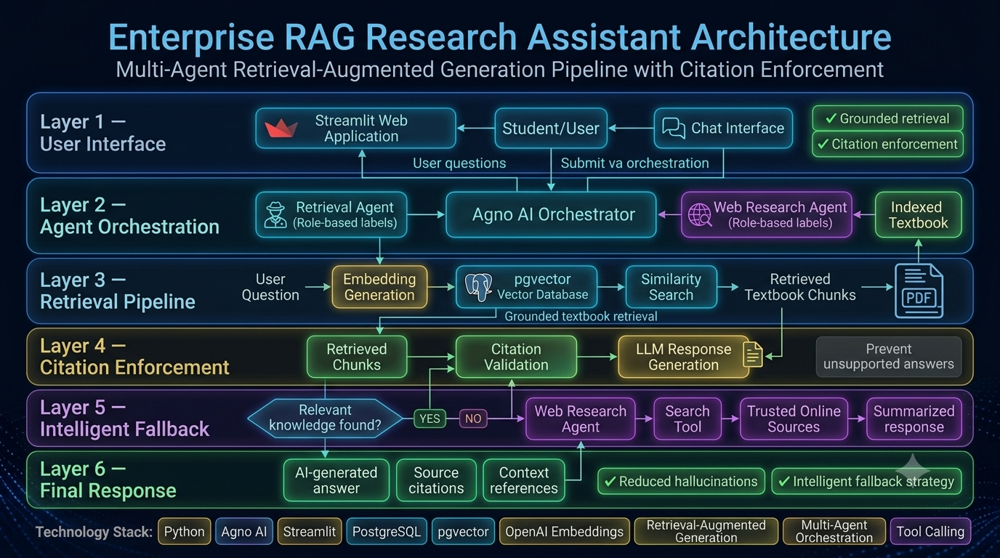

ML Research Assistant Knowledge Platform
AI-powered retrieval-augmented generation platform for machine learning education
The Challenge
Students learning machine learning often rely on general-purpose AI assistants that may provide incomplete explanations, omit citations, or occasionally generate inaccurate information. The goal was to create an educational assistant that prioritizes trusted textbook knowledge before consulting external sources, helping learners receive more reliable and verifiable answers.
⚡ Solution
ML Research Assistant combines retrieval-augmented generation (RAG), multi-agent orchestration, semantic search, and citation enforcement to answer machine learning questions using authoritative textbook content. When the local knowledge base cannot answer a question, a secondary research agent performs controlled web research to supplement the response.
Workflow Overview

User questions are first matched against an indexed machine learning textbook stored in a vector database. Relevant passages are retrieved through semantic search and supplied to the language model to generate grounded responses with citations. If no relevant material is found, a specialized research agent retrieves additional information from trusted online sources before preparing the final answer.
Key Features
Grounded Retrieval
Answers are generated from indexed textbook content whenever relevant information exists, reducing reliance on model memory and improving factual consistency.
Citation Enforcement
Retrieved passages are incorporated into every textbook-derived response, allowing learners to verify explanations against the original source material while helping reduce hallucinations.
Intelligent Fallback
When the knowledge base cannot answer a question, a dedicated research agent performs web searches and synthesizes information before presenting the final response.
Technical Architecture

The architecture integrates Streamlit, Agno AI agents, embedding generation, PostgreSQL with pgvector, semantic similarity search, and LLM-based response generation. Role-based agent orchestration coordinates retrieval, citation validation, and fallback web research to deliver accurate, context-aware responses.
Technology Stack
Future Roadmap
The current implementation indexes a foundational machine learning textbook to support introductory topics. The architecture is designed to scale by adding additional textbooks covering deep learning, large language models, statistics, reinforcement learning, and other AI disciplines, creating a comprehensive educational knowledge platform.
Demonstration Access
The application is deployed on Streamlit Community Cloud and is available through controlled access. Authentication protects commercial LLM API usage while allowing demonstrations of the complete retrieval, citation, and multi-agent workflow.